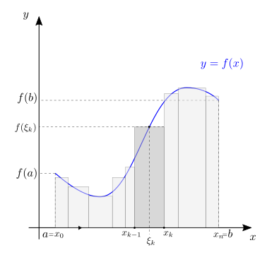
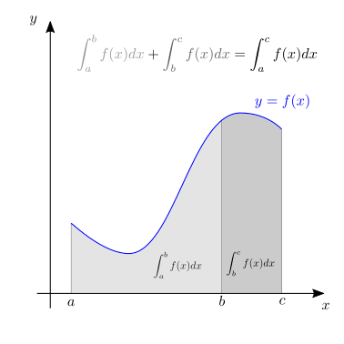
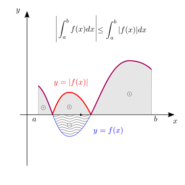

25. Integrali#
25.1. Definizioni#
Definition 25.1 (Somma di Riemann)
Data una funzione continua \(f: [a,b] \rightarrow \mathbb{R}\) e una partizione \(P\) dell’intervallo \([a,b]\),
una somma di Riemann \(\sigma\) della funzione \(f\) sulla partizione \(P\) viene definita come
con \(\xi_k \in [x_{k-1}, x_k]\).
Definition 25.2 (Integrale di Riemann)
Sia \(\Delta x = \max_k (x_{k} - x_{k-1})\), l’integrale definito di Riemann è il limite per \(\Delta x \rightarrow 0\) della somma di Riemann \(\sigma\)
Osservazione. Dato l’intervallo \([a,b]\), per \(\Delta x \rightarrow 0\) il numero di intervalli della partizione tende all’infinito, \(n \rightarrow \infty\).
|
 |

Definition 25.3 (Funzione integrabile (secondo Riemann))
Una funzione \(f(x): D \subseteq \mathbb{R} \rightarrow \mathbb{R}\) è integrabile sull’intervallo \([a,b] \subseteq D\) se esiste (finito?) l’integrale di Riemann
25.1.1. Interpretazione geometrica#
L’integrale definito
corrisponde al valore dell”area con segno tra il grafico della funzione \(y=f(x)\) e l’asse \(x\), per valori di \(x \in [a,b]\). Se la funzione è positiva in un intervallo, il contributo dell’integrale sull’intervallo è positivo; se la funzione è negativa in un intervallo, il contributo dell’integrale sull’intervallo è negativo.
25.1.2. Integrale definito#
25.1.2.1. Proprietà dell’integrale definito#
Dalla definizione (25.2) dell’integrale di Riemann seguono immediatamente le seguenti proprietà:
linearità dell’integrale definito
additività sull’intervallo
valore assoluto dell’integrale è minore dell’integrale del valore assoluto
scambio degli estremi di integrazione
integrale di una funzione costante
 |
|
 |
|

25.1.3. Integrale indefinito#
Usando la proprietà (25.4) di additività sull’intervallo dell’integrale definito,
si osserva che i due integrali con estremo superiore \(x\) e diverso estremo inferiore differiscono solo per una quantità indipendente da \(x\), \(\int_{a}^{b} f(t) \ dt\). Data la funzione \(f(x)\) e il valore \(a\) come paramtetro, si definisce una funzione di \(x\)
Usando questa definizione, è immediato dimostrare che l’integrale definito \(\int_{a}^{b} f(t) \ dt\) è uguale alla differenza della funzione \(F(\cdot; b)\) calcolata nei due estremi,
e che questo risultato è indipendente dal valore \(c\), usato come parametro nella definizione della funzione \(F\).
Data una funzione \(f(x)\), le due funzioni \(F(x;a_1)\), \(F(x;a_2)\) differiscono solo di un termine che dipende dai parametri \(a_1\), \(a_2\) ma non dalla variabile indipendente \(x\). La famiglia di funzioni \(F(x;a)\) ottenuta per ogni valore di \(a\) definisce quindi una funzione \(F(x)\) a meno di una costante additiva, la funzione primitiva della funzione \(f(x)\).
L”integrale indefinito di una funzione \(f(x)\) viene definito come,
dove la costante additiva \(C\) tiene conto dell’arbitrarietà appena discussa.
L”integrale definito di una funzione continua \(f(x): D \rightarrow \mathbf{R}\) su un’intervallo \([a,b] \subseteq D\) può quindi essere valutato come la differenza della funzione primitiva \(F(x)\) valutata nell’estremo superiore e nell’estremo inferiore,
25.2. Teoremi#
25.2.1. Teorema della media#
Theorem 25.1 (Teorema della media)
Sia \(f: [a,b] \in \mathbb{R} \rightarrow \mathbb{R}\) una funzione continua su un intervallo \([a,b]\) chiuso e limitato, allora esiste \(c \in [a,b]\) tale che
Dimostrazione
Poiché \(f(x): [a,b] \rightarrow \mathbb{R}\) è una funzione continua definita su un intervallo chiuso e limitato, allora per il teorema di Weierstrass la funzione ammette minimo \(m\) e massimo \(M\) per valori di \(x \in [a,b]\),
Integrando questa relazione sull’intervallo \([a,b]\),
La regola di integrazione per una funzione costante (25.7) permette di calcolare gli integrali estremi
e dividendo per \((b-a) \ne 0\), si ottiene la relazione
Siano \(x_m\) e \(x_M \in [a,b]\) i punti - i numeri reali - in cui la funzione assume i valori minimo e massimo. Se \(x_m < x_M\), si applica il teorema dei valori medi sull’intervallo \(I_m = [x_m, x_M]\), in caso contrario sull’intervallo \(I_m = [x_M, x_m]\).
Per il teorema dei valori intermedi, la funzione continua \(f(x)\) definita sull’intervallo chiuso e limitato \(I_m \subseteq [a,b]\), assume tutti i valori compresi tra i valori nei due estremi, cioè esiste un numero \(c \in I_m\) tale che
e tra tutti i valori compresi tra \(m\) e \(M\) esiste un punto \(c\) in cui la funzione assume il valore particolare definito dalla media \(\frac{1}{b-a}\int_{a}^{b} f(x) \, dx\), cioè
|

25.2.2. Teorema fondamentale del calcolo infinitesimale#
Theorem 25.2 (Teorema fondamentale del calcolo infinitesimale)
Data una funzione \(f: D \rightarrow \mathbb{R}\) integrabile sull’intervallo \([a,b] \subseteq D\), Definition 25.3, si definisce la funzione
Oss. Qui la variabile di integrazione \(t\) è una variabile dummy, non ha un significato particolare che resista all’operazione di integrazione. La funzione \(F\) ha come argomento \(x\) l’estremo di integrazione superiore dell’integrale.
Se \(f\) è limitata la funzione \(F(x)\) è continua se \(f\) limitata
Se \(f\) è continua in \((a,b)\), allora \(F(x)\) è differenziabile in \((a,b)\) e la sua derivata vale \(F'(x) = f(x)\), o più esplicitamente
\[\dfrac{d}{dx} \int_{a}^{x} f(t) dt = f(x) \ .\]
Dimostrazione
Continuità. Si dimostra la continuità di \(F(x)\), usando la definizione di funzione continua, valutando \(\lim_{x \rightarrow x_0} F(x)\), e verificando che vale \(\lim_{x \rightarrow x_0} F(x) = F(x_0)\)
avendo usato (1) l’additività dell’integrale sull’intervallo (25.4), (2) le operazioni con i limiti per scrivere il limite della somma di funzione come la somma dei limiti - almeno, quando i limiti esistono finiti, come in questo caso per l’intergabilità della funzione -, e (3) riconoscendo che l’integrale di una funzione limitata su un intervallo di dimensione nulla è nullo esso stesso.
Derivata di \(F(x)\). L’espressione della derivata di \(F(x)\) si ottiene dal calcolo diretto, partendo dalla definizione di derivata di una funzione reale a variabile reale
avendo usato (1) l’additività dell’integrale sull’intervallo (25.4), (2) il teorema della media, e (3) la continuità di \(f\), che permette di scrivere
quando \(\xi_{[x,x+\varepsilon]} \rightarrow x\) quando le dimensioni dell’intervallo vengono fatte tendere a zero, e di concludere la dimostrazione del teorema.
Oss. Per evitare questioni sull’appartenenza di \(x + \varepsilon \in [a,b]\) si può usare la definizione «all’indietro» della derivata,
25.2.3. Derivata su dominio dipendente dalla variabile indipendente#
Theorem 25.3 (Derivata su dominio dipendente dalla variabile indipendente - Reynolds)
Sia \(x \in D\), e gli estremi di integrazione \(a(x)\), \(b(x)\) todo Caratteristiche?
Dimostrazione
25.3. Integrali fondamentali#
Una volta dimostrato il teorema fondamentale del calcolo infinitesimale, questo risultato può essere usato per valutare gli integrali fondamentali come l’operazione inversa alla derivazione applicata alle derivate fondamentali
Per un’ulteriore lista si rimanda alla tabella a fine sezione.
25.4. Integrali impropri#
Vengono definiti integrali impropri alcune famiglie di integrali definiti, come ad esempio:
gli integrali di funzioni continue definite su domini con almeno un estremo aperto (finito o infinito), \(f: D_{a,b} \subseteq \mathbb{R} \rightarrow\), che hanno come estremo di integrazione un estremo dell’intervallo. Questo caso comprende sia i limiti al finito
Example 25.1 (\(\int_{0}^{b} \frac{1}{x} \, dx\))
poiché \(\lim_{a \rightarrow 0^+} \ln a = -\infty\).
Example 25.2 (\(\int_{0}^{b} \frac{1}{x^n} \, dx\))
Se \(n>0\) e \(n \ne 1\),
Example 25.3 (\(\int_{a}^{+\infty} \frac{1}{n^n}\))
…
25.4.1. Condizioni di integrabilità#
…
25.4.2. Valore principale di Cauchy#
In alcuni casi è possibile «risolvere» una forma indeterminata della forma \(+\infty - \infty\) nel calcolo di un integrale improprio che dà come risultato un valore finito. Questo valore finito viene definito valore principale di Cauchy. E” questo l’esempio dell’integrale della funzione \(\frac{1}{x}\) su un intervallo che contiene il punto \(x=0\). Questo punto è un punto di discontinuità della funzione, dove questa non è definita. Dati due valori \(a\), \(b\) tali che \(a < 0 < b\), l’integrale \(\int_{x=a}^{b} \frac{1}{x} \, dx\) viene quindi interpretato come
e il suo calcolo produce il risultato
25.5. Regole di integrazione#
25.5.1. Integrazione per parti#
La regola di integrazione per parti viene ottenuta integrando la regola di derivazione del prodotto (24.6). Siano \(F(x)\), \(G(x)\) le primitive delle funzioni \(f(x)\), \(g(x)\), e quindi vale \(F'(x) = f(x)\), \(G'(x) = g(x)\). La regola di derivazione del prodotto \(F(x)G(x)\) viene scritta come
Isolando il termine \(f(x)G(x)\) e integrando il primo termine grazie al teorema fondamentale del calcolo infinitesimale, si ottiene
Nota
Consigli:
\(f(x)\) facile da integrare,…
Derivazione che riporti a integrali più semplici: esempio, può ridurre di \(1\) la potenza della funzione \(G(x) = x^n\) a ogni applicazione dell’integrazione per parti
…
Example 25.4 (Esempio di integrazione per parti)
Si vuole calcolare l’integrale
usando la regola di integrazione per parti. Utilizzando il fato che la funzione \(e^x\) ha primitiva \(e^x\), si sceglie come funzione da integrare, mentre la funzione \(x\) viene derivata,
Con questa scelta, si risolve l’integrale,
25.5.2. Integrazione con sostituzione#
La regola di integrazione con sostituzione viene ottenuta dalla regola di derivazione della funzione composta (24.8). Sia \(\widetilde{F}(x)\) la funzione composta \(\widetilde{F}(x) = F( y(x) )\) e siano definite le derivate
per la regola di derivazione della funzione composta,
Usando il teorema del calcolo infinitesimale, todo
25.5.2.1. Sostituzioni utili#
Funzioni trigonometriche e iperboliche.
Example 25.5 (\(\displaystyle \int \sqrt{a^2 - x^2} \, dx\))
L’integrale
ha senso per intervalli di integrazioni tali che \(|x| \le |a|\). In questi casi, usando la sostituzione \(x = a \, \sin \theta\), e il suo differenziale \(dx = a \, \cos \theta \, d \theta\), si può riscrivere l’integrale come
e riportandosi alla variabile originale \(x\) con la trasformazione inversa
e usando la formula \(\sin( 2 \theta ) = 2 \sin \theta \cos \theta = 2 \dfrac{x}{a} \sqrt{1 - \left( \frac{x}{a} \right)^2}\),
Example 25.6 (\( \displaystyle \int \sqrt{a^2 + x^2} \, dx\))
L’integrale
ha senso per ogni intervallo di numeri reali. Si può usare la sostituzione
per utilizzare le proprietà delle funzioni iperboliche e scrivere
Si può tornare alla variabile indipendente di partenza \(x\) con la trasformazione inversa
Example 25.7 (\(\displaystyle \int \sqrt{x^2 - a^2} \, dx\))
L’integrale
ha senso per intervalli di integrazioni tali che \(|x| \ge |a|\). In questi casi, si può usare la sostituzione
per utilizzare le proprietà delle funzioni iperboliche e scrivere
Si può tornare alla variabile indipendente di partenza \(x\) con la trasformazione inversa
Osservazione. Quale segno? Discussione… todo
Example 25.8 (\(\displaystyle \int \frac{1}{\sqrt{a^2 - x^2}} \, dx\))
L’integrale
ha senso per intervalli di integrazioni tali che \(|x| \le |a|\). In questi casi, usando la sostituzione \(x = a \, \sin \theta\), e il suo differenziale \(dx = a \, \cos \theta \, d \theta\), si può riscrivere l’integrale come
Example 25.9 (\(\displaystyle \int \frac{1}{\sqrt{a^2 + x^2}} \, dx\))
L’integrale
ha senso per ogni intervallo di numeri reali. Si può usare la sostituzione
per utilizzare le proprietà delle funzioni iperboliche e scrivere
Example 25.10 (\(\displaystyle \int \frac{1}{\sqrt{x^2 - a^2}} \, dx\))
L’integrale
ha senso per intervalli di integrazioni tali che \(|x| \ge |a|\). In questi casi, si può usare la sostituzione
per utilizzare le proprietà delle funzioni iperboliche e scrivere
Osservazione. Quale segno? Discussione… todo
Radici.
Example 25.11 (\(\displaystyle \int \sqrt[n]{ax+b} \, dx \))
Metodo 0.
Metodo 1. Con sostituzione
Example 25.12 (\(\displaystyle \int \sqrt{a + bx + x^2} \, dx \))
Metodo 0. Con completamento del quadrato
ci si può riportare agli integrali della forma \(\displaystyle \int \sqrt{y^2 - A^2} \, dy\) o \(\displaystyle \int \sqrt{y^2 + A^2} \, dy\) a seconda del valore di \(a - \frac{b^2}{4}\), con \(y = x+ \frac{b}{2}\).
Metodo 1. Con cambio di variabili
Example 25.13 (\(\displaystyle \int \sqrt{a + bx - x^2} \, dx \))
Metodo 0. Con completamento del quadrato
ci si può riportare agli integrali della forma \(\displaystyle \int \sqrt{-y^2 + A^2} \, dy\) con \(y = x+ \frac{b}{2}\).
Osservazione. Nel caso in cui \(a + \frac{b^2}{4}\) sia negativo, allora non esiste alcun intervallo reale nel quale l’integranda sia definita, e di conseguenza l’integrale non ha senso.
Metodo 1. Con cambio di variabili
Tangente \(\frac{x}{2}\) La trasformazione di coordinate
risulta utile a trasformare un’integranda dove compaiono funzioni trigonometriche in un’integranda razionale.
Example 25.14 (Razionalizzazione con cambio di variabili \(z = \tan\left( \frac{x}{2} \right)\).)
Usando la definizione della tangente
si può riscrivere la relazione fondamentale della trigonometria
Usando le regole per valutare le funzioni trigonometriche di una somma, si può riscrivere \(\cos x\) in termini di \(z\)
e (usando la relazione fondamentale della trignometria \(\sin^2 x + \cos^2 x = 1\), e la definizione di tangente),
25.5.3. Frazioni parziali#
todo E” una regola valida per funzioni integrande che possono essere scritte come il rapporto di due polinomi, \(f(x) = \frac{N(x)}{D(x)}\), e segue direttamente dalla possibilità di scomporre il polinomio a denominatore in polinomi di primo e secondo grado, grazie al teorema fondamentale dell’algebra, e scrivere il rapporto come somma di frazioni.
todo descrivere meglio il metodo
Example 25.15 (Integrazione con frazioni parziali)
Example 25.16 (Integrazione con frazioni parziali)
I valori dei coefficienti \(A\) e \(B\) vengono calcolati imponendo che la somma di frazioni sia uguale alla frazione di partenza. RIportando a fattore comune la somma delle due frazioni, e uguagliando il numeratore della frazione ottenuta con il numeratore della frazione di partenza si ottiene
che, dovendo essere vera per ogni valore di \(x\), eqivale al sistema di due equazioni in due incognite (una per ogni potenza di \(x\) che compare nella condizione),
la cui soluzione è \(A = -\frac{1}{2}\), \(B = \frac{5}{2}\). L’integrale quindi diventa
25.6. Applicazioni#
25.6.1. Studio di funzione#
Uno studio di funzione completo può richiedere la padronanza di tutti gli strumenti del calcolo infinitesimale: ricerca del dominio, limiti, derivate e integrali.
studio di funzione - capitolo di introduzione all’analisi - dominio, limiti ed eventuali asintoti
trovare il dominio di una funzione
valutare i limiti della funzione agli estremi del dominio, o in corrispondenza di punti di discontinuità
studio di funzione - capitolo sulle derivate - punti di estremi locali, punti di flesso
studio di funzione - capitolo sugli integrali - area sottesa al grafico di una funzione, e altre grandezze integrali